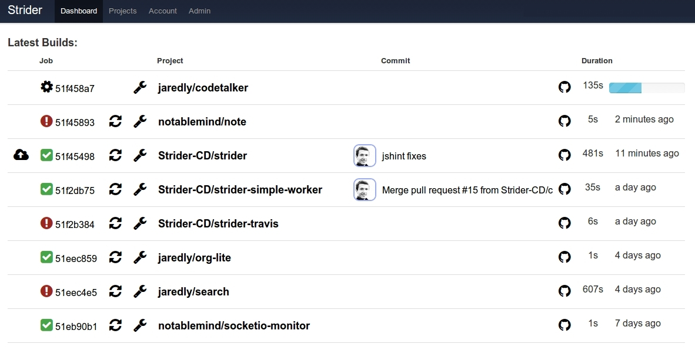

Brilliant Continuous Deployment
Strider is an Open Source Continuous Deployment / Continuous Integration
platform. It is written in Node.JS / JavaScript and uses MongoDB as a backing
store. It is published under the BSD license.

Strider is extremely customizable through plugins. Plugins can do the following:
- Add hooks to perform arbitrary actions during build.
- Modify the database schema to add custom fields.
- Register their own HTTP routes.
- Subscribe to and emit socket events.
- Create or modify user interfaces within Strider.
- And so much more! Just use your imagination!